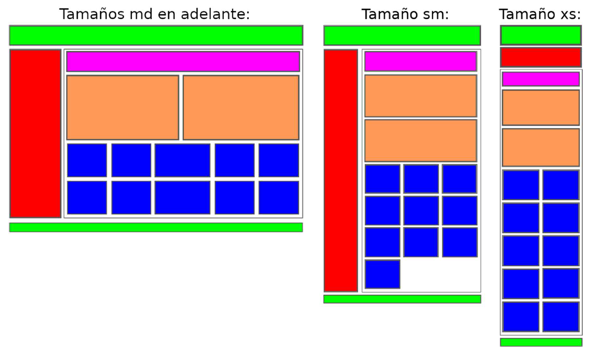

En este ejercicio vamos a seguir practicando con la librería Bootstrap y su sistema de rejilla. Para este ejercicio utilizaremos también la plantilla para una página web básica, le añadiremos un contenedor de tipo container e iremos añadiendo filas y columnas intentando imitar el diseño (y colores) del esquema de la siguiente figura:
En este caso diferenciaremos entre tres disposiciones para la misma web, la de la izquierda se refiere a los tamaños grandes (lg, xl y xxl) y medianos (md), la disposición central al tamaño pequeño o de tablets (sm) y la de la derecha la correspondiente a móviles (xs).
Tenéis que aplicar las clases de Bootstrap necesarias para que al cambiar el tamaño de la pantalla se cambie la disposición de los bloques como se muestra en el esquema. Tened en cuenta que para este ejercicio es necesario utilizar el anidamiento de columnas.
En la disposición para tamaños grandes, se puede ver como el bloque central de las columnas de color azul tiene un tamaño diferente. Esto se debe a que las 12 posibles columnas del sistema de rejilla de Bootstrap no es divisible por este número de columnas. ¿Cómo podríamos hacer que las cinco columnas tengan el mismo tamaño?